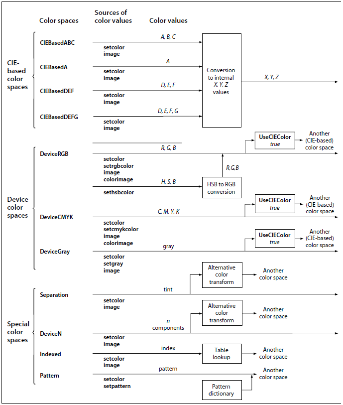
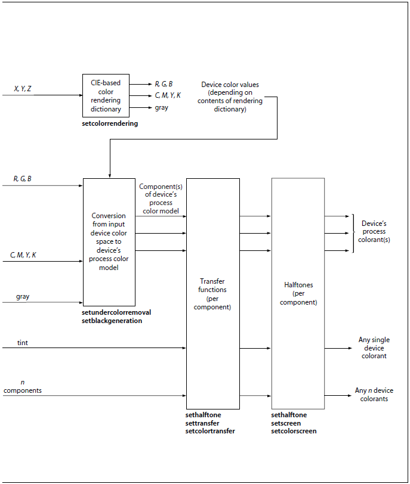

The PostScript language includes powerful facilities for
specifying the colors of graphical objects to be marked on the current
page. The color facilities are divided into two parts:
Color specification. A PostScript program can specify
abstract colors in a device-independent way. Colors can be described
in any of a variety of color systems, or color spaces. Some color
spaces are related to device color representation (grayscale, RGB,
CMYK), others to human visual perception (CIE-based). Certain special
features are also modeled as color spaces: patterns, color mapping,
separations, and high-fidelity and multitone color.
Color rendering. The PostScript interpreter reproduces
colors on the raster output device by a multiple-step process that
includes color conversion, gamma correction, halftoning, and scan
conversion. Certain aspects of this process are under PostScript
language control. However, unlike the facilities for color
specification, the color rendering facilities are device-dependent
and ordinarily should not be accessed from a page description.
This section describes the color specification facilities of the
PostScript language. It covers everything that most PostScript
programs need in order to specify colors. Chapter 7
describes the facilities for controlling color rendering; a program
should use those facilities only to configure or calibrate an output
device or to achieve special device-dependent effects.
Figures 4.5 and 4.6 on pages 212 and 213 illustrate the
organization of the Post- Script language features for dealing with
color, showing the division between (device-independent) color
specification and (device-dependent) color rendering.

FIGURE 4.5 Color specification

FIGURE 4.6 Color rendering